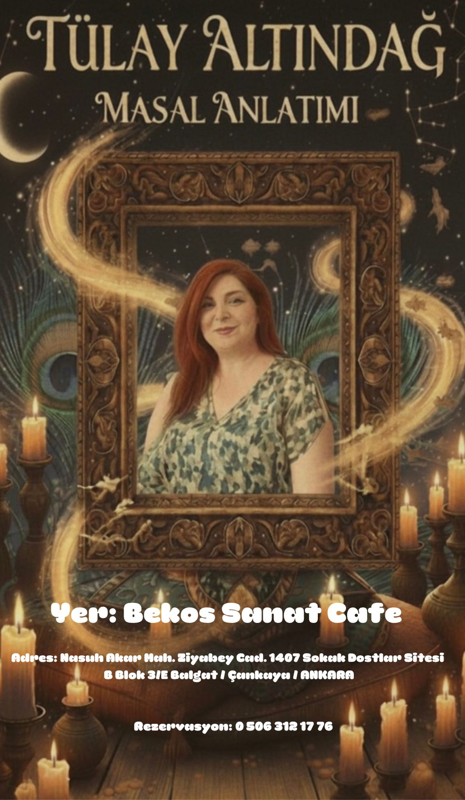

Gordion Atölyesi ve Masal Günleri
Tarih: 24-25 Ekim 2025

Cuma akşamı, çocuklar için kilden Gordion heykelleri yapımı ve resim atölyesi etkinliği büyük bir ilgiyle gerçekleştirildi. Tümüs ve Kral Midas gibi tarihi figürler, çocukların yaratıcılığıyla hayat buldu. Etkinlik, dünyaca ünlü Gordion Masalları ile devam etti ve çocuklar masal dünyasına keyifli bir yolculuk yaptı. Cumartesi sabahı ise, çocuklar için Gordion heykelleri yapımı ve resim atölyesi etkinliği devam etti. Cumartesi akşamı ise yetişkinler için masal anlatımı etkinliği düzenlendi ve katılımcılar, geçmişten günümüze uzanan masalların büyüsüne kapıldılar. Hem çocuklar hem de yetişkinler için unutulmaz bir deneyim oldu.